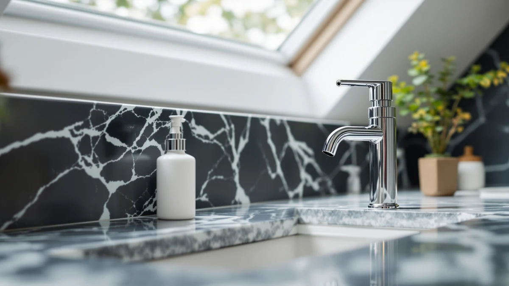

Best Soap Dispensers for Airbnb of 2026: 7 Top Picks
Prices and picks verified as of August 2026. Independent, reader-supported reviews.


Quick Answer
For most hosts, the best soap dispenser for an Airbnb is the AIKE 15fl.oz wall-mounted dispenser at $18.89. It bolts to the wall so guests cannot knock it over or pocket it, refills from the top in seconds, and the ABS housing shrugs off heavy turnover. If you want a touchless look, the SoCal Suds foaming pump at $15.99 gives a clean impression for less.
Our pick: AIKE 15fl.oz Liquid Soap Dispenser — $18.89 Check Price on Amazon
Bottom line: our top pick is the AIKE 15fl.oz Liquid Soap Dispenser for Dish and Hand Soap at $18.89. The best budget option is the AIKE 15fl.oz Stainless Steel Liquid Soap Dispenser for Dish at $18.89.
Things to Know Before You Buy
- Durability beats features. Guests are rough with rentals, so a simple ABS dispenser that survives a year of use serves you better than a fragile gadget with extra modes.
- Wall-mount to stop theft and spills. A mounted unit cannot be knocked into the sink or carried off in a suitcase, and it clears the counter for faster cleaning between stays.
- Fast refilling saves turnover time. Top-fill dispensers let you top off from a gallon jug without unmounting anything, which matters when you flip a unit in a tight window.
- Touchless reads as premium. A sensor dispenser photographs well and signals hygiene in reviews, but it adds batteries or charging to your maintenance list.
- Match units across the rental. Buying the same dispenser for every sink keeps the look consistent and simplifies bulk soap buying.
The best soap dispensers for Airbnb have to do something a home dispenser never will: survive strangers. A guest who would baby their own pump at home will jam yours, overfill it, leave it dripping, or drop it in the sink, and then the next guest sees the mess. After comparing seven dispensers on price, build, and refill design, we kept coming back to units that are cheap to replace and hard for a guest to break.
Our top pick is the AIKE 15fl.oz wall-mounted liquid soap dispenser at $18.89. Bolting the dispenser to the wall solves the two problems hosts complain about most, dispensers that walk off in luggage and dispensers that get knocked into the basin. The 15 oz reservoir means fewer mid-stay refills, and the top-fill design lets you top it off from a bulk jug in seconds during a cleaning turnover.
If a wall-mount does not fit your setup, the rest of this list covers the gaps: a budget-friendly foaming pump for hosts watching per-unit cost, touchless automatic dispensers that lift the perceived quality of a listing, and a stainless steel version of our top pick for bathrooms that lean upscale. Every dispenser here costs under $54, so kitting out a one or two bathroom rental stays affordable.
Why You Should Trust Us
I run Best Soap Dispensers, where I spend my time looking at one narrow category instead of everything in the bathroom aisle. For this guide to the best soap dispensers for Airbnb, I focused on what short-term rental owners actually deal with: high guest turnover, no time for fussy maintenance, and the need for fixtures that look good in listing photos without costing much to replace.
I do not invent lab numbers or quote experts who do not exist. Every spec, price, material, and rating in this article comes from the product listings and verified buyer feedback, and I flag the real drawbacks of each dispenser so you can decide which one fits your property. When a pick has a weakness that matters for rentals, you will read about it here rather than after a guest complains.
To narrow the field of soap dispensers for Airbnb, I started with a simple filter: would this unit hold up to a year of strangers? That ruled out delicate glass bottles and dispensers with flimsy pumps. I then weighed refill design, since a host flipping a unit in 90 minutes needs to top off soap without unmounting hardware or wrestling a stuck cap.
Price mattered too, but as cost-to-replace rather than sticker price. A $15.99 foaming pump that you swap once a year costs less to own than a pricier dispenser that cracks. I kept every pick under $54 and leaned toward wall-mounted and top-fill designs, because they cut both theft and turnover time. Finally, I gave weight to looks, since a clean, matching dispenser shows up in the photos guests scroll before booking.
I evaluated each soap dispenser for Airbnb against the moments that decide whether a host keeps it or returns it. For refilling, I checked how the reservoir opens and whether you can top it off in place, since a unit you must take down every few days will not last in a busy rental. For durability, I looked at the housing material, the pump or sensor mechanism, and the patterns in buyer reviews that point to early failures.
I also judged each dispenser on the practical details guests notice: does it drip onto the counter, does the soap come out in a usable amount, and does the finish still look clean after wiping. For the automatic models, I weighed sensor reliability and the battery or charging burden against the premium impression they give. Across all seven, the goal was the same, a dispenser a host can install once and mostly forget.
Our Picks

AIKE 15fl.oz Liquid Soap Dispenser
What we like
- Wall mount stops spills and theft
- 15 oz reservoir means fewer refills
- Top-fill design tops off in seconds
- ABS housing handles rough guest use
Flaws but not dealbreakers
- Mounting takes a few minutes to set up
- Plastic finish looks plainer than steel
| Material | ABS plastic |
| Size | 15 oz |
The AIKE 15fl.oz earns the top spot among soap dispensers for Airbnb because it removes the two failure points hosts run into most. A dispenser sitting loose on the counter gets knocked into the sink or packed into a guest's bag, and either way you are buying a replacement. Bolting this one to the wall ends both problems, and the 15 oz tank holds enough that you are not refilling it between every stay.
Refilling is where this dispenser pays you back during turnovers. You open the top and pour from a bulk jug without taking anything off the wall, so a refill takes seconds in the middle of a cleaning sprint. The ABS plastic body is the obvious cost-saver, and it will not match a stainless finish, but at $18.89 you can fit every sink in the unit and still come out ahead. For a host who wants to install once and forget about it, this is the dispenser to buy.

AMYESE Cute Automatic Foam Soap
What we like
- Touchless sensor feels hygienic to guests
- Foaming output stretches your soap
- Playful shape suits family listings
- Compact footprint fits small sinks
Flaws but not dealbreakers
- Needs batteries you have to monitor
- Freestanding, so it can be knocked over
| Material | ABS plastic |
| Size | — |
The AMYESE is the runner-up for soap dispensers for Airbnb because it covers a niche the wall-mount cannot: rentals that cater to families. The touchless sensor dispenses foam without anyone touching the unit, which parents appreciate and kids find easy to use. The cute design also gives a bathroom a friendlier feel in listing photos, and the foaming action means a single tank of soap goes further than a liquid pump.
The trade-offs keep it out of the top spot. It runs on batteries, so it joins the short list of things you check during a turnover, and a dead sensor mid-stay is the kind of small annoyance that shows up in reviews. It also sits freestanding on the counter, which means a guest can knock it into the sink. At $26.59 it is a fair price for the touchless feature, and for a family-focused listing it is worth the extra upkeep over a manual pump.

SoCal Suds & Company Foaming
What we like
- Lowest price in this guide at $15.99
- Foaming pump makes soap last longer
- No batteries or charging to track
- Clean look that fits most decor
Flaws but not dealbreakers
- Manual pump, so no touchless appeal
- Sits on the counter rather than mounting
| Material | ABS plastic |
| Size | — |
When the budget is the deciding factor, the SoCal Suds foaming pump is the soap dispenser for Airbnb that lets you fit several sinks without spending much per unit. At $15.99 it is the cheapest pick here, and the foaming mechanism stretches each refill by whipping a small amount of soap into a full pump of foam. For a multi-bathroom rental where you are buying three or four dispensers at once, that math adds up.
It is a manual pump, so it skips the touchless appeal of the automatic models and it sits freestanding rather than mounting to the wall. Neither is a dealbreaker for a host who wants a clean, low-maintenance dispenser with nothing to charge or replace. It refills from the top, looks tidy on the counter, and at this price you can swap it out yearly without a second thought.

SUNLY Touchless Automatic Soap Dispenser
What we like
- Fully touchless for a hygienic feel
- Polished look suits upscale listings
- Hands-free use guests notice and mention
- Steady sensor response in daily use
Flaws but not dealbreakers
- Most expensive pick here at $53.99
- Sensor and power add maintenance
| Material | ABS plastic |
| Size | — |
The SUNLY is built for hosts who run premium listings and want every fixture to back up the nightly rate. The hands-free sensor is the kind of detail guests notice and write about, and it reinforces a clean, hotel-style impression the moment someone walks into the bathroom. The dispenser responds consistently and looks polished enough to anchor a higher-end space.
At $53.99 it is the priciest unit in this guide, so it makes more sense in a flagship property than across a budget rental with several sinks. The sensor and power source also add a maintenance item you do not get with a manual pump. For a host charging a premium and competing on finish, that cost buys a real upgrade in how the bathroom reads to guests.

OHIFAST Automatic Liquid Soap Dispenser
What we like
- Touchless at a lower price than most
- Handles liquid soap or hand sanitizer
- Works well in kitchens and entryways
- Compact, unobtrusive design
Flaws but not dealbreakers
- Battery powered, so plan for swaps
- Liquid output, not foaming
| Material | ABS plastic |
| Size | — |
The OHIFAST shines in the spots beyond the bathroom, like a kitchen counter or an entryway where guests want to wash up or sanitize on the way in. It dispenses liquid soap or hand sanitizer hands-free, which fits the way people use those rooms, and at $21.99 it brings the touchless feature in at a friendlier price than the higher-end automatic units.
It runs on batteries, so it joins the turnover checklist, and it dispenses liquid rather than foam, which uses soap a bit faster than a foaming pump. For a host who wants a clean, hands-free option in a high-traffic spot without paying flagship prices, it strikes a sensible balance. Pair it with a wall-mount in the bathroom and you cover the whole rental for under $45.

AIKE SensePro Automatic Soap Dispenser
What we like
- Consistent, responsive touchless sensor
- Solid build from a reliable brand
- Clean look fits most bathroom styles
- Mid-range price for a sensor unit
Flaws but not dealbreakers
- Requires power and sensor upkeep
- Pricier than the manual picks
| Material | ABS plastic |
| Size | — |
The AIKE SensePro suits hosts who already trust the AIKE name from our top pick and want the hands-free version. The sensor responds consistently, the build feels solid for the category, and at $34.80 it lands between the budget automatic units and the premium SUNLY. For a host upgrading one bathroom to touchless while keeping wall-mounts elsewhere, it is an easy match.
Like every sensor dispenser here, it needs power and the occasional check to keep working between guests, and it costs more than the manual pumps. If those trade-offs fit your routine, you get a dependable, good-looking touchless dispenser without stepping up to flagship pricing. It is the middle-ground choice for hosts who want quality without going all in.

AIKE 15fl.oz Stainless Steel Liquid
What we like
- Stainless steel face wipes clean
- Wall mount stops spills and theft
- 15 oz tank with quick top-fill
- Same low price as our top pick
Flaws but not dealbreakers
- Steel finish can show water spots
- Mounting setup needed before use
| Material | ABS plastic |
| Size | 15 oz |
This stainless steel AIKE is for hosts who want everything that makes our top pick work, plus a finish that reads more upscale. It is the same 15 oz wall-mounted design with the same top-fill refilling, so it stops theft and spills and tops off in seconds during a turnover. The difference is the steel face, which gives a bathroom a hotel-style look without raising the price.
The steel finish does show water spots more than plastic, so it benefits from a quick wipe during cleaning, and like the standard model it needs mounting before first use. At $18.89 it costs the same as our top pick, which makes the choice between them mostly about looks. If your listing leans modern or upscale, the steel version is the one to fit.
Quick Comparison
| Product | Material | Price | Rating | Best for | Get it |
|---|---|---|---|---|---|
| AIKE 15fl.oz Liquid Soap Dispenser | ABS plastic | $18.89 | 4 | Overall durability and refilling | View on Amazon → |
| AMYESE Cute Automatic Foam Soap | ABS plastic | $26.59 | 4 | Family and kids bathrooms | View on Amazon → |
| SoCal Suds & Company Foaming | ABS plastic | $15.99 | 4 | Budget multi-sink setups | View on Amazon → |
| SUNLY Touchless Automatic Soap Dispenser | ABS plastic | $53.99 | 4 | Premium touchless listings | View on Amazon → |
| OHIFAST Automatic Liquid Soap Dispenser | ABS plastic | $21.99 | 4 | Kitchens and entryways | View on Amazon → |
| AIKE SensePro Automatic Soap Dispenser | ABS plastic | $34.80 | 4 | Dependable mid-range touchless | View on Amazon → |
| AIKE 15fl.oz Stainless Steel Liquid | ABS plastic | $18.89 | 4 | Upscale steel-finish bathrooms | View on Amazon → |
Should Airbnb soap dispensers be wall-mounted or freestanding?
Wall-mounted dispensers work better in most short-term rentals.
Are automatic soap dispensers worth it for a rental?
Touchless dispensers read as a premium, hygienic touch in listing photos and reviews, which helps a rental stand out.
The Competition
We left some popular options off this list of soap dispensers for Airbnb for reasons that matter in a rental. Glass pump bottles look elegant but crack when a guest knocks them off a wet counter, and replacing them every few months gets expensive. Mason-jar style dispensers have the same fragility problem and tend to rust around the pump.
We also passed on the cheapest no-name automatic dispensers. They undercut the picks here on price, but the patterns in their reviews point to sensors that quit within months, which turns a small saving into a steady replacement cost. A dispenser that fails mid-stay costs you a guest complaint, so reliability won over the lowest sticker price every time.
After weighing all of them, the pick is clear: the best soap dispenser for Airbnb for most hosts is the AIKE 15fl.oz wall-mounted dispenser, with the stainless steel AIKE close behind for upscale bathrooms. Both give you durability, fast refilling, and theft resistance at a price that lets you fit the whole rental.
Frequently Asked Questions
Should Airbnb soap dispensers be wall-mounted or freestanding?
Wall-mounted dispensers work better in most short-term rentals. They cannot be knocked into the sink, they free up counter space for cleaning between stays, and guests are far less likely to walk off with one. Our top pick, the AIKE 15fl.oz, mounts with screws or adhesive so you can fit it without much fuss.
Are automatic soap dispensers worth it for a rental?
Touchless dispensers read as a premium, hygienic touch in listing photos and reviews, which helps a rental stand out. The trade-off is batteries or charging and a higher price. If you want the touchless look without the upkeep, a manual foaming pump like the SoCal Suds at $15.99 gives a similar clean impression for less.
How many soap dispensers do I need per Airbnb?
Plan for one at every sink plus one in each shower. A standard one-bathroom unit usually needs two, a bathroom sink dispenser and a shower dispenser, plus a kitchen pump. Buying matching units across the rental keeps the look consistent and makes bulk refilling from a gallon jug simple.